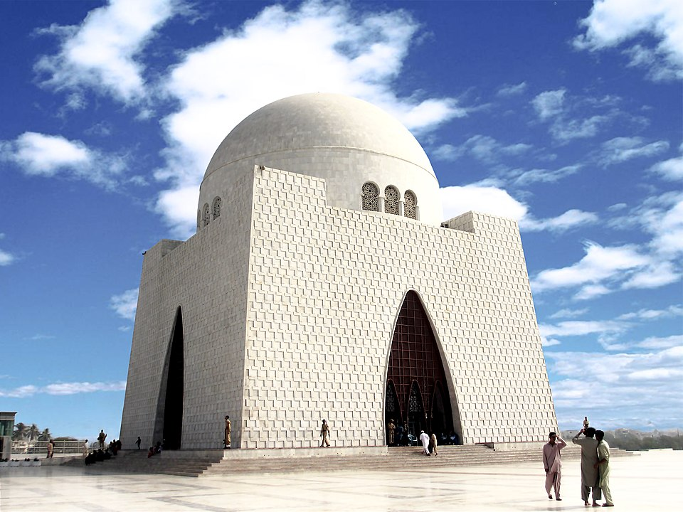

Mazar-e-Quaid

Description
The final resting place of Muhammad Ali Jinnah, the founder of Pakistan. This stunning mausoleum is a symbol of national unity and pride, featuring a blend of modern and traditional Mughal architecture.
PAF Museum Karachi

Description
The PAF Museum is dedicated to preserving the history and legacy of the Pakistan Air Force, with a collection of over 50 aircraft, radars, and missiles on display. The museum is spread over several acres, featuring both indoor and outdoor exhibits that provide a detailed glimpse into the PAF's storied past.